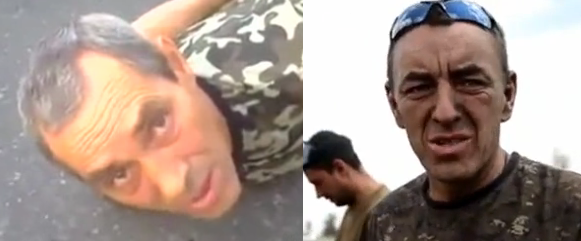
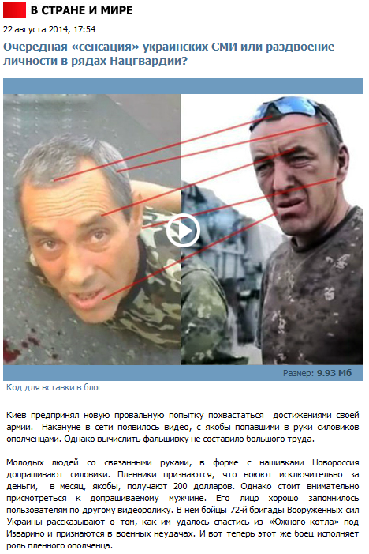
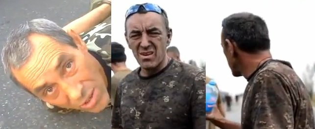

Ложь: боец Нацгвардии «сыграл» сепаратиста
Официальный телеканал российских вооруженных сил «Звезда» опубликовал якобы разоблачение украинских СМИ, которые сообщили о захвате украинскими военными боевиков в зоне Антитеррористической операции.
По мнению канала, украинцы представили в роли боевика бойца собственной 72 бригады.Сотрудники «Звезды» считают, что на этих кадрах изображен один и тот же человек.
На самом деле это неправда.
Просмотреть оригинал видео с пленными сепаратистами можно здесь (вставить его на сайт невозможно из-за настроек автора).
Вот оригинал видео с бойцами 72 бригады, которые рассказывают, что им приходится воевать с российскими войсками, а также о просчетах украинского командования:
https://www.youtube.com/watch?v=OTYBqYhnVME
Показанные в этих роликах мужчины – разные.Это можно определить сразу по нескольким признакам.Так, у бойца 72-й бригады гораздо больше морщин на коже, а левая часть лица заметно побита чем-то похожим на оспу.В то время как лицо сепаратиста гладкое, морщин гораздо меньше, а следов от оспы нет совсем.Кроме того, у украинца есть заметный шрам под левым глазом, а у боевика он отсутствует.
Еще одним важным признаком является седина – пророссийский боевик практически равномерно покрыт обильной сединой, в то время как у украинского бойца незначительно поседели лишь виски, а остальные части головы сединой затронуты лишь минимально.
Окончательно убедиться в том, что речь идет о разных мужчинах, можно, внимательно просмотрев оба исходных ролика.
Posted On: 2014-08-21T21:00:00



Content Date: 2014-08-21
Download Date: 2021-07-16
Document ID: L0C04FFWK